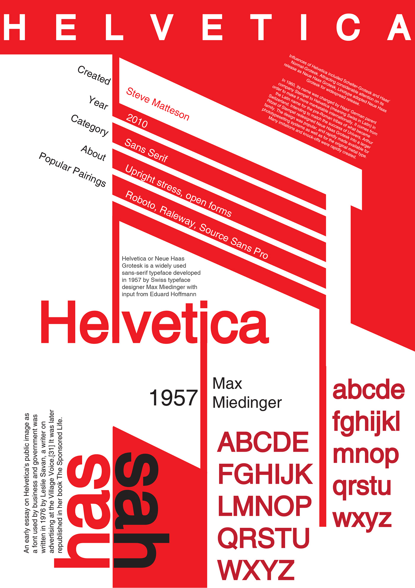
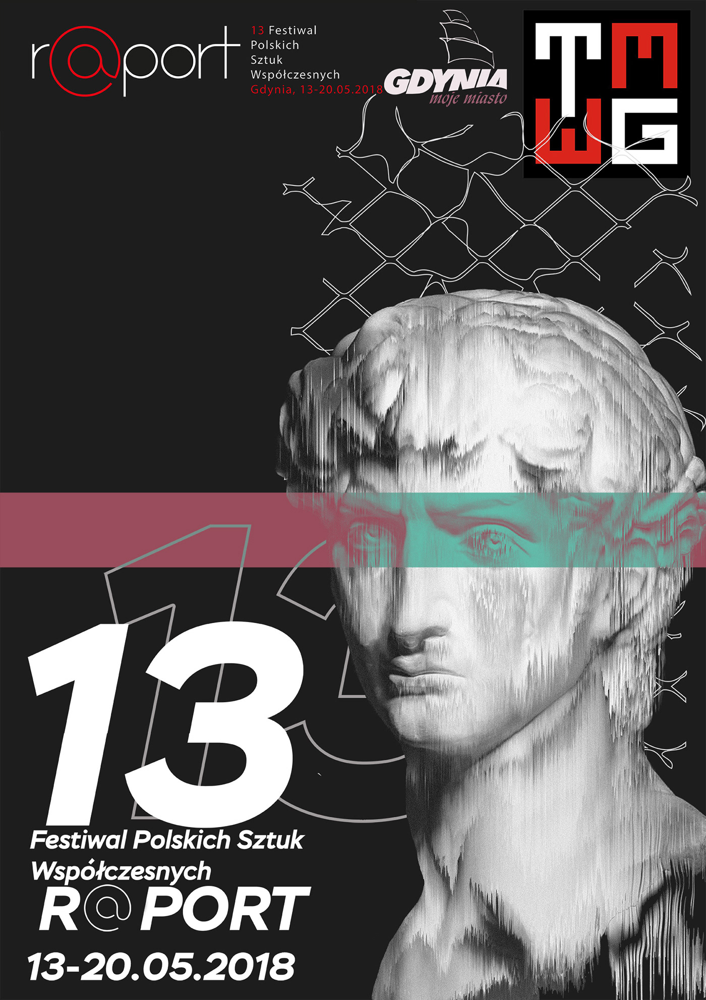
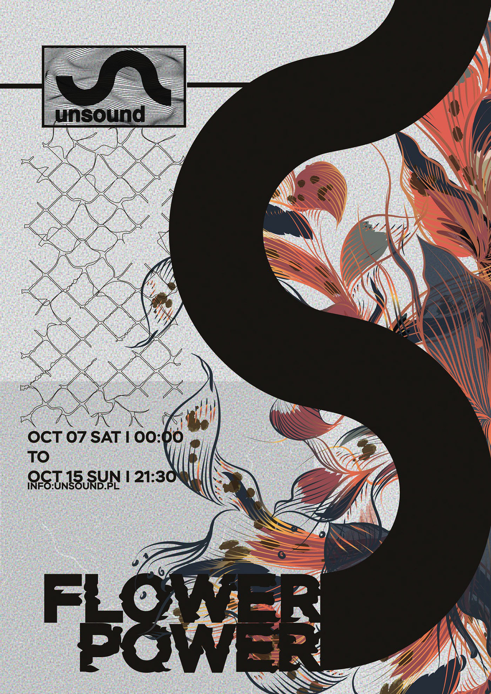

Concert video
The best pastime is necessarily accompanied by good music. Provided an excellent opportunity to recharge positive emotions and feel the very inexpressible explosive atmosphere of two old school music bands - ONYX and Dope D.O.D. Our team with the greatest accuracy tried to convey the charge that this evening was received by every visitor to the Aurora Concert Hall.
Concert video
When visiting the Roof Music Fest 2018 there were no other options but to get the most pleasure, enjoying the magic mix - nice music and a beautiful view from the roof to St. Petersburg. This is the key to success and provided all visitors of the festival with positive emotions, and our team - a pleasant pastime at work.
Advertisement
Like Box Have you ever thought about what a variety of tastes are in all the sweets? Have you ever had such a situation when you are standing in a store and your eyes run in different directions, like a small child in a candy shop? If so, then Like Box can help you with this! The coolest and exclusive sweets from the US and Europe. Slow gifts for you and those you love Like Box.
Concert video
Perhaps the most large-scale musical event of the summer of 2018 is the Waves Music Festival. Especially for the fans gathered under one roof the most vivid and audacious performers of the new wave of domestic hip-hop. ATL, Feduk, Yanix, Husky, Big Baby Tape, Boulevard Depo and Bumble Beezy performed with their best compositions, so beloved by the public. Explosive discharge under the most popular tracks left a trace in the memory of all visitors to the festival, and our team is no exception.

Infographics
Infographics was made to tell and show people what the Helvetica font means. The direct purpose of infographics is to be a poster placed on the streets or walls of an educational institution. It carries a simple and understandable information. Typically, typography.
Poster R@PORT
The poster was made for an event dedicated to the festival of Polish art. In this project there is typography and glych art.


Poster Unsound
The poster was made for an event dedicated to electronic music in Poland, namely in the city of Krakow. In this project, there are visual effects, typography and all sorts of modern art references.